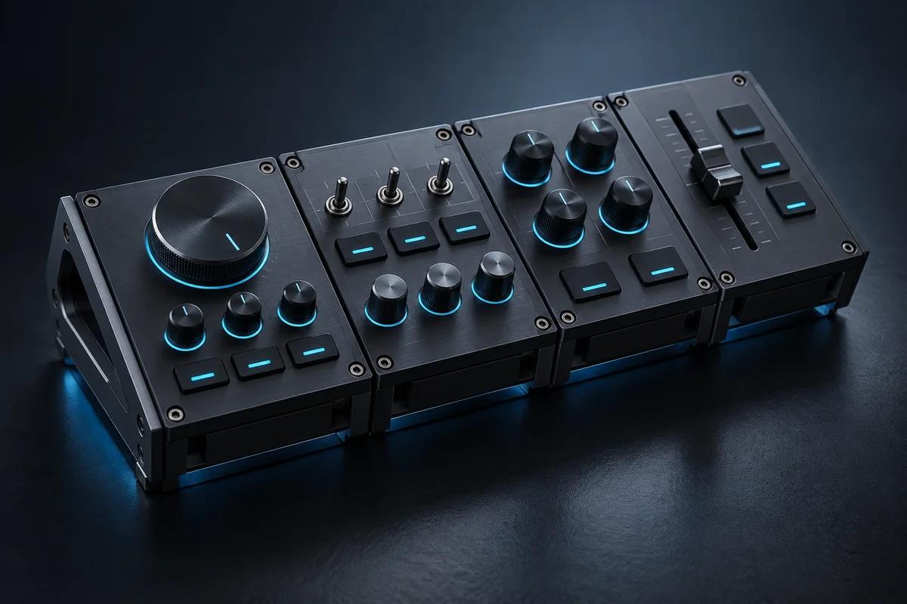

Proyecto de ejemplo
Modular Input Deck
Un panel de control personalizable para flujos de trabajo creativos y prototipos rápidos de hardware.

La vista previa de Modular Input Deck no está disponibleDiseñado para ser modular
El panel combina controles giratorios, botones y deslizadores en módulos intercambiables. De este modo, la interfaz puede adaptarse a diferentes tareas.
Del montaje a la interacción
El diseño tiene en cuenta desde el principio el montaje, el tendido de cables y la orientación táctil. Los indicadores de estado en cian trasladan el lenguaje visual del portafolio al producto físico.